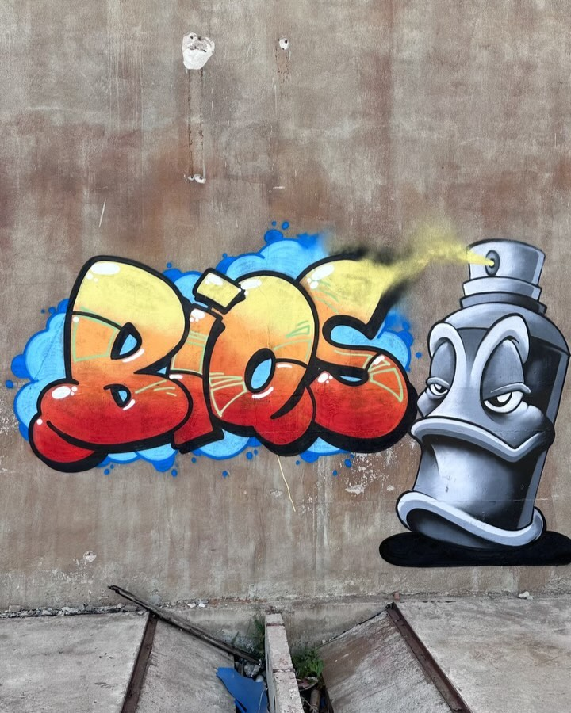
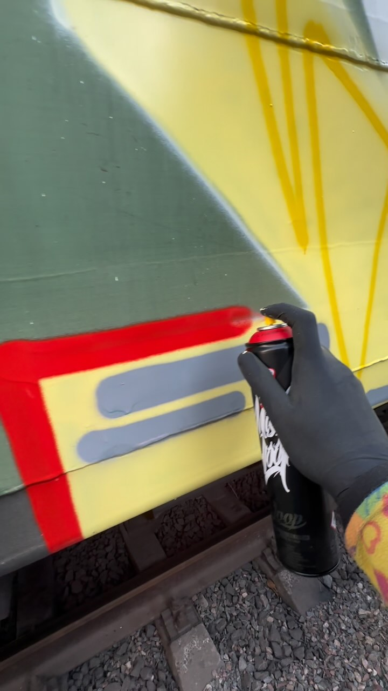

Стіни, потяги, покинуті цехи. Двадцять із гаком років однієї лінії.

І окремо — зйомка того, як фарба лягає. Мільйони переглядів на одному русі руки.
01
Вибране з архіву: закінчені шматки й кадри процесу.
Гортай — кожен наступний кадр наїжджає на попередній
У нього немає улюбленої стіни. Є улюблена лінія. Вагон, фасад, покинутий цех — задача та сама: щоб її помітили.
Дивись сам.
Решта архіву
02
Знімає сам, від першої особи
Він знімає графіті від першої особи — руку, балончик і мить, коли фарба торкається поверхні. Ці відео збирають десятки мільйонів переглядів.
Зйомка процесу — окрема послуга: для брендів, фестивалів і власних проєктів. Матеріал підходить і для реклами, і для соцмереж.

03
Одна з найвпізнаваніших рук в українському графіті
Борис Біосов. Одеса. Понад двадцять років під тегом BIOS — один із найвідоміших псевдонімів української графіті-сцени.
Fat315
StyleMachines
TopAndDope
XXfam
Блог Montana Cans
Виїзди в Польщу
Лекція «Графіті від першого лиця»
в артцентрі «Я Галерея»
Малює
Знімає
Тримає графіті-шоп в Одесі
Видає журнал про графіті
04
Журнал і шоп — теж його руками
Перший український журнал про графіті. 88 сторінок, наклад 600 примірників, сцена 2020 — початку 2021. Разом із Євгеном Шиловим і Олександром Магулою.
Графіті-шоп у центрі Одеси, працює з 2017 року. Фарба, маркери, кепи, одяг. Соборна площа, 6.
05
Пише сам, без менеджерів